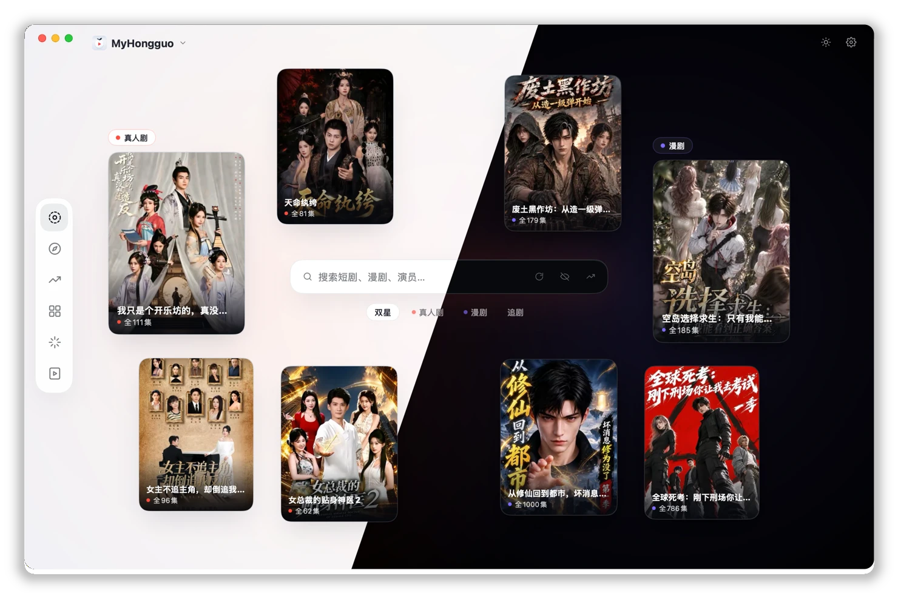
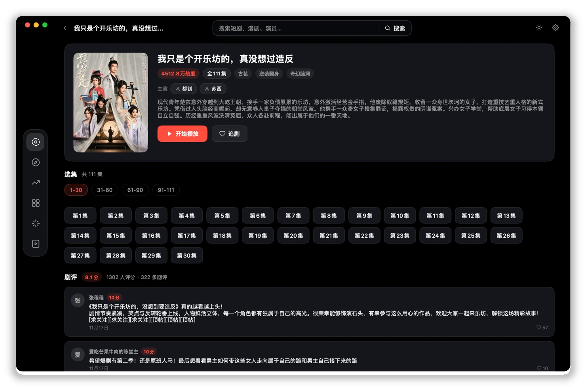

双星引力场：真人剧与漫剧同屏发现
首页以 3:4 竖版海报呈现左翼真人剧与右翼漫剧，支持「双星 / 真人剧 / 漫剧 / 追剧」四种视图、滚轮无限换批、搜索联想和短剧热搜榜。
MyDouyin · MyHongguo 是一款同时集成抖音与红果短剧的开源原生桌面客户端，支持 macOS（Apple Silicon）与 Windows 10/11。无需安卓模拟器、无需浏览器多开，打开就能在电脑上刷抖音视频、看抖音直播，以及免登录免费追红果短剧与漫剧。





MyDouyin · MyHongguo 是一款面向 macOS（Apple Silicon）和 Windows 10/11 用户的开源原生桌面软件，在一个应用内同时提供「抖音桌面端（MyDouyin）」与「红果短剧电脑版（MyHongguo）」。它直接运行在电脑桌面，无需安卓模拟器或浏览器多标签，适合想在电脑大屏刷抖音、看直播以及免费追红果短剧和漫剧的用户。
想在电脑大屏看红果免费短剧却不想安装卡顿的安卓模拟器？在 MyDouyin 中点击左上角品牌胶囊或按 ⌘2 / Ctrl+2 进入 MyHongguo 模式，即可原生浏览真人剧、漫剧、AI剧和影视剧全集。
首页以 3:4 竖版海报呈现左翼真人剧与右翼漫剧，支持「双星 / 真人剧 / 漫剧 / 追剧」四种视图、滚轮无限换批、搜索联想和短剧热搜榜。
完整覆盖剧集榜与演员榜、多条件分类筛选、按日期浏览每日上新，以及按真人剧、漫剧、AI剧、影视剧分类搜索，点演员即可直达全部作品主页。
剧集详情页展示评分、热度、状态标签、简介、多季切换、分组选集与相关推荐，完整支持查看剧评与楼中楼回复，点「开始播放」立刻起播。
播放页自带画面弹幕与右侧抽屉（集成选集、本集评论、剧评与弹幕列表），点击任意弹幕即可精准跳转对应剧情时间点，播完自动连播下一集。
不需要注册或绑定手机号即可观看全集。软件会在本机自动保存「我的追剧」和「最近观看」，精确记住每集观看秒数，下次打开一键续播。
Windows 上不用买微软商店 HEVC 扩展也能正常显示全部红果剧集封面；内置「绕过系统代理直连」（默认开启）与一键重置匿名设备，减少网络异常。
相比打开就吵闹连播的网页端，MyDouyin 为桌面用户设计了先搜索再观看的「引力场」首页，同时保留完整的抖音频道、直播间、实时弹幕与带图评论体验。
启动后先呈现居中搜索框与 8 张错落视频卡片，支持「精选 / 关注 / 稍后 / 历史」切换、鼠标滚轮无重复换批、纯静搜索与实时抖音热搜。
支持上下切视频、自动隐藏控制条与鼠标指针、清晰度与倍速切换、自动连播、清屏模式、听抖音音频模式、画中画小窗、网页全屏与系统全屏。
完整支持直播频道与直播间观看，提供原画、蓝光、超清、高清、标清与智能多档位清晰度切换、异常自动切备用线路，以及实时弹幕、评论与送礼。
支持楼中楼展开回复、官方表情面板，通过选图、粘贴截图或拖拽直接发带图评论；内置高清原图查看器（缩放、切换、复制与保存），点头像和 @ 直达作者主页。
涵盖精选、推荐、关注、朋友、直播、短剧、合集、创作者主页，以及我的作品、喜欢、收藏、稍后再看、观看历史、私信（只读）与通知，看过的视频自动同步减少重复推荐。
调用系统原生硬件解码，macOS 长时间刷视频不把缓存写满硬盘、不发烫，支持浅色「极净瓷白」与深色「纯黑黑洞」双主题自由切换。
如果你正在寻找好用的 Mac 抖音客户端或电脑看红果短剧的方法，下面是一目了然的差异对比。
| 使用需求 | MyDouyin · MyHongguo | 浏览器网页版 | 套壳客户端 / 安卓模拟器 |
|---|---|---|---|
| 同时看抖音与红果 | 单窗口集成抖音 + 红果短剧，⌘1 / ⌘2 一键切换 | 仅能看抖音；红果短剧缺少完整电脑网页版 | 看红果必须装安卓模拟器，和抖音分开运行 |
| 打开体验 | 引力场首页安静选片或搜索，不强制一打开就自动发声 | 一打开页面立刻自动播放推荐流 | 模拟器冷启动慢，常伴随广告和后台弹窗 |
| 免登录使用 | 红果全程免登录；抖音免登录可看视频、搜索与直播间 | 频繁弹出登录拦截 | 通常需先登录手机端账号环境 |
| 电脑流畅度 | 原生桌面端、硬件解码，Mac 不把缓存写满硬盘 | 多开标签后浏览器内存持续上涨 | 虚拟机/套壳常驻占用高，风扇噪音明显 |
| 安装与更新 | 开箱即用，无需装额外编解码插件，支持应用内一键升级 | 依赖浏览器与插件兼容性 | 体积庞大，每次升级需重新下载完整包 |
安装包优先通过 Cloudflare R2 全球节点高速直连分发，同时同步至 GitHub Releases 并附带 SHA256SUMS 校验和，支持安装后在应用内一键升级。
xattr -dr com.apple.quarantine /Applications/MyDouyin.app
irm https://dl.imclawd.tech/mydouyin/install.ps1 | iex
有。MyDouyin 内置完整的 MyHongguo 红果短剧模式，原生运行在 macOS（Apple Silicon）和 Windows 10/11 电脑上，不需要安卓模拟器或手机投屏。打开软件后点击左上角品牌胶囊或按 ⌘2 / Ctrl+2，即可免费观看真人短剧、漫剧与 AI 剧，支持榜单、分类、搜索、全集选集、剧评、实时弹幕与本地断点续播。
在 macOS（Apple Silicon）上安装 MyDouyin 即可直接浏览抖音引力场首页、推荐、关注、朋友、直播、短剧与合集。应用支持多档画质直播间、实时弹幕、粘贴/拖拽发带图评论、小窗播放与清屏模式，扫码登录后自动同步点赞收藏与观看历史。
可以。红果短剧模式（MyHongguo）全程免登录使用，追剧收藏和每集播放进度自动保存在本机。抖音模式（MyDouyin）不登录也能浏览引力场精选、推荐、分类、搜索、作者主页与公开直播间，仅点赞、收藏、关注、发评论、发弹幕或同步历史时需要扫码登录。
不需要额外安装任何插件。MyDouyin 的 Windows 版已内置完整封面解码与原生视频播放能力，开箱即可正常显示红果短剧海报并直接播放，无需 FFmpeg 或微软商店付费 HEIF/HEVC 扩展。仅 Windows N / KN 精简版需在系统可选功能中安装 Media Feature Pack。
点击右上角齿轮打开「设置 › 红果短剧 (MyHongguo)」，确认「绕过系统代理直连」处于开启状态（默认已开启）。如果匿名设备遇到限流，点击「重置匿名设备」即可重新生成匿名身份并恢复加载。
个人开源版本尚未申请 Apple 官方公证，macOS Gatekeeper 会默认拦截首次运行。将应用拖入「应用程序」目录后，在「系统设置 › 隐私与安全性」点击「仍要打开」，或在终端运行 xattr -dr com.apple.quarantine /Applications/MyDouyin.app 即可正常启动。
代码完全开源、零遥测、不上传任何统计信息。你的登录凭证、红果追剧列表与播放进度只保存在本机系统配置目录中（macOS 位于 ~/Library/Application Support，Windows 位于 %APPDATA%），覆盖安装或应用内更新均不会丢失数据。
本项目的实现借鉴并受益于以下优秀开源项目与社区贡献者：